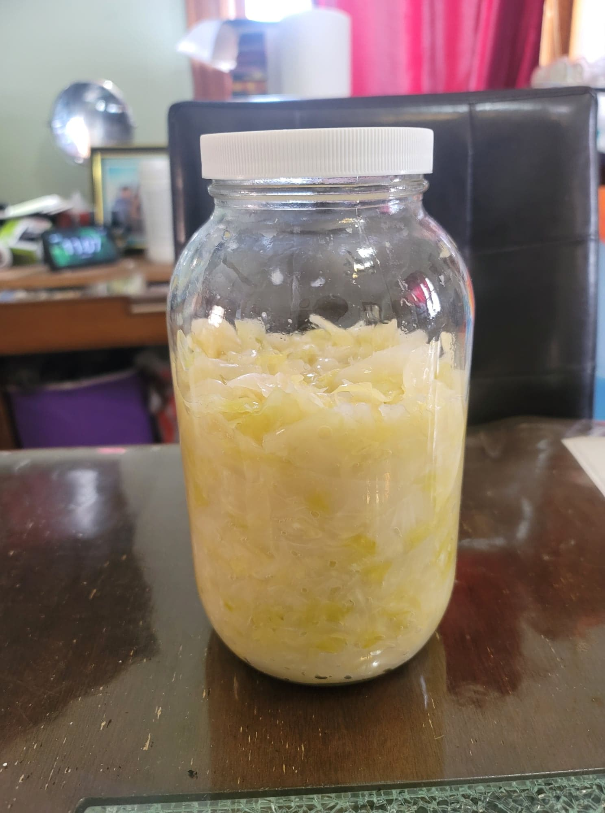

Sauerkraut

Ingredients:
- 1 Cabbage
- Salt, as needed
- Optional: 1 tbsp Caraway seeds
- Optional: 1 tsp Juniper berries
Instructions:
- Quarter and core the cabbage. Shred into very thin strips.
- Weigh the cabbage. The salt needed is exactly 2% of the weight of the cabbage.
- In a large bowl, add in the cabbage and salt. Aggressively massage and squeeze the salt into the cabbage. The cabbage should release a lot of liquid.
- Place the cabbage and its liquid into a half-gallon jar along with the caraway seeds or juniper berries. Push down heavily on the cabbage until the cabbage is completely submerged in its brine. Place plastic wrap and a weight into the jar to weigh down the cabbage, ensuring that nothing floats to the surface.
- Loosely seal the jar with a lid and place in a dark, room temperature location. Let ferment for about 3 weeks, checking occasionally that everything is completely submerged in the brine. Once it has the desired taste, transfer to a refrigerator. Serve raw or cooked.